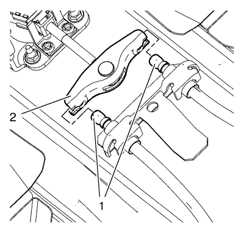
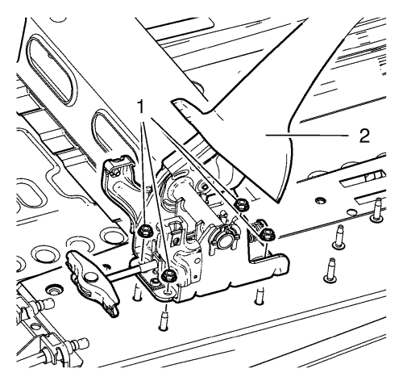

Sustitución de la palanca del freno de mano
Advertencia: Consulte Advertencia relacionada con el polvo procedente de los frenos en la sección Prólogo.
Procedimiento de desmontaje
- Desmonte la consola delantera del piso. Consultar Sustitución de la consola inferior frontal .

- Desenganche el cable del freno de mano (1) de la palanca del freno de mano (2).
- Desmonte el interruptor del indicador del freno de mano. Consultar Sustitución del interruptor del indicador del freno de mano .

- Retire la tuerca de la palanca del freno de mano (1).
- Retire la palanca del freno de mano (2).
Procedimiento de montaje
- Monte la palanca del freno de mano (2).
Precaución: Consulte Precaución con las fijaciones en la sección Prólogo.
- Monte la tuerca de la palanca del freno de mano (1). Apriete la tuerca hasta 10 N·m (89 lib. pulg.).
- Monte el interruptor del indicador del freno de mano. Consultar Sustitución del interruptor del indicador del freno de mano .
- Enganche el cable del freno de mano (1) a la palanca del freno de mano (2).
- Extraiga el soporte de transporte (1).
- Monte la consola delantera del piso. Consultar Sustitución de la consola inferior frontal .
| © Copyright Chevrolet. Reservados todos los derechos |